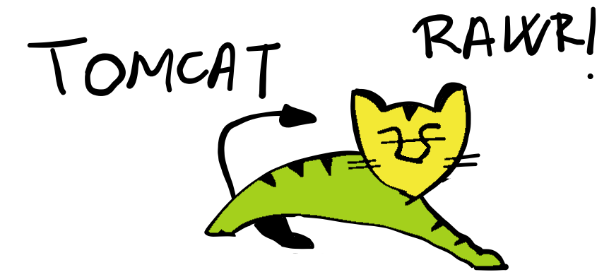
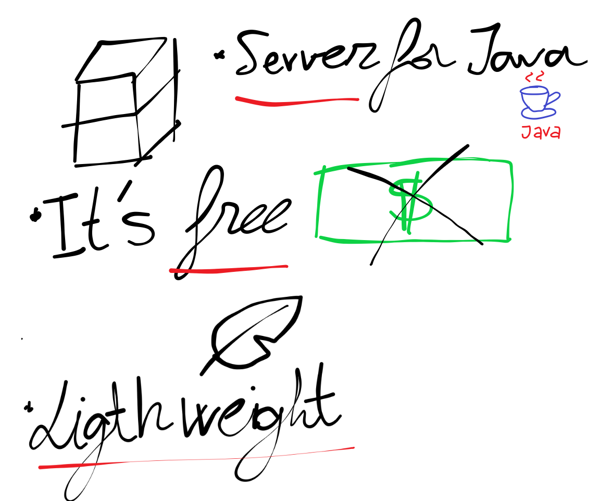
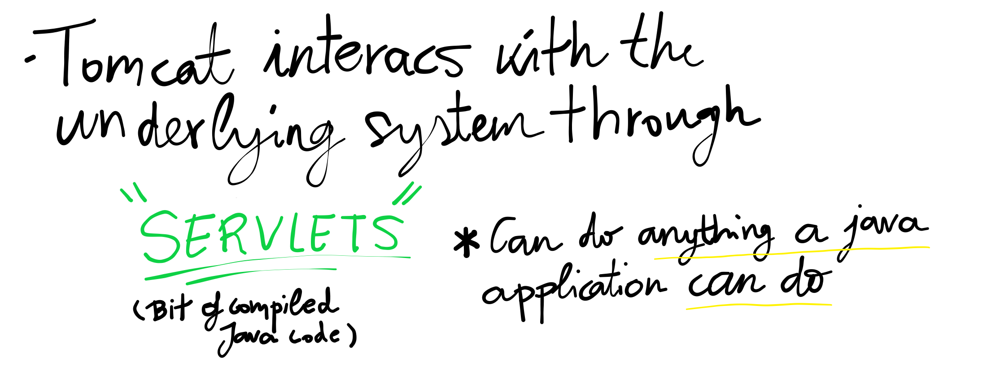
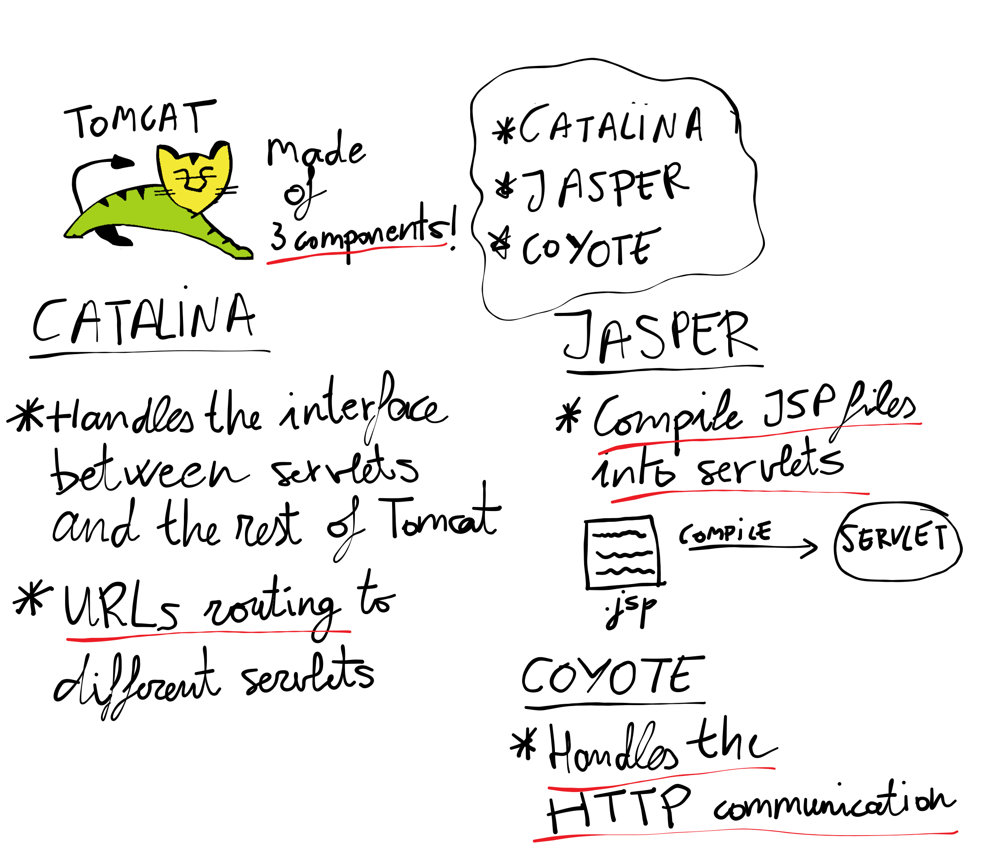

Índice

- Tomcat
- Estructura de directorios.
Tomcat



- Es un contenedor web con soporte de servlets y JSPs.
- NO es un servidor de aplicaciones (como JBoss).
- Tiene el compilador "Jasper" que compila JSPs convirtiendolo en Servlets.
- Normalmente se combina Tomcat con el servidor web "Apache" (aunque realmente también podemos usar Tomcat como servidor web).
- A partir de la versión 4.0, tomcat utiliza el contendor de servlets "Catalina".
Estructura de directorios
- bin
- Arranque/Cierre.
- Otros ejecutables.
-
common: clases comunes que pueden ser utilizadas por Catalina y las aplicaciones Web.
-
conf
- ficheros de configuracion XML.
- ficheros DTD para la configuración del Tomcat
-
logs
- Logs de Catalina.
- Logs de aplicaciones web.
-
server: clases utilizadas solo por Catalina.
-
shared: clases compartidas por todas las aplicaciones web.
-
webapps: directorio con las aplicaciones web.
-
work: almacenamiento temporal de ficheros y directorios.